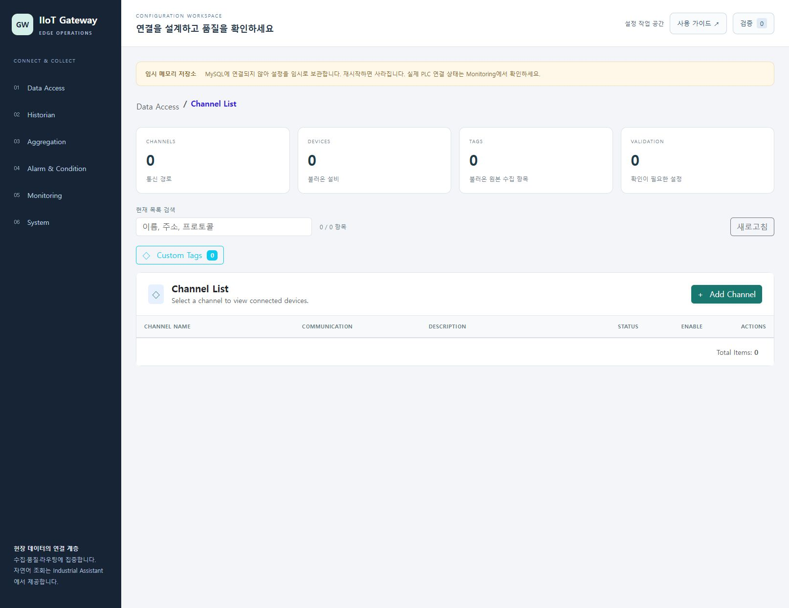
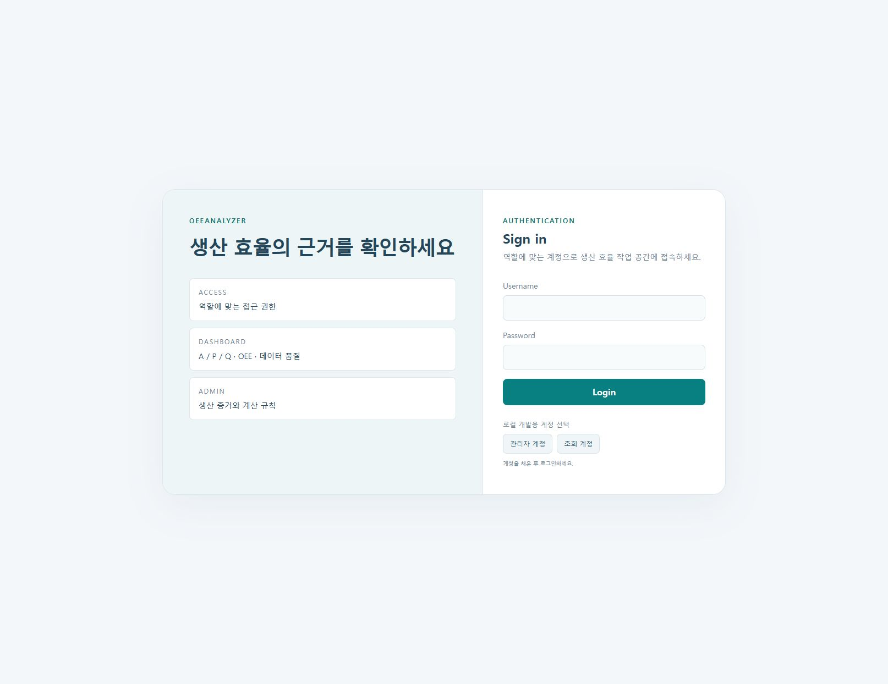

THE OPERATION LIBRARY / 2026.10.25
화면을 보며,
한 단계씩 직접.
처음 실행하는 순간부터 결과를 확인할 때까지. 일곱 솔루션의 사용 순서를 실제 화면과 함께 안내합니다.
07솔루션41동작 안내38실제 캡처56통합 PDF 쪽
로컬 실습을 기록한 사용 안내입니다. 각 동작에 실행 확인 범위와 미연결·미확인 상태를 함께 표시했습니다.
7개 솔루션
01
 PLC Simulation
PLC Simulation
장치 연결부터 원본 태그와 가상 Ladder까지
5개 동작 · 캡처 5장 · 전용 문서 8쪽 · 통합본 6–11쪽

02
 IIoT Gateway
IIoT Gateway
수집 구성을 다루고 실제 연결 상태를 구분하기
4개 동작 · 캡처 4장 · 전용 문서 7쪽 · 통합본 12–16쪽

03
 TwinForge
TwinForge
3D 모의 공장에서 설비를 찾고 운영 근거 읽기
6개 동작 · 캡처 6장 · 전용 문서 9쪽 · 통합본 17–23쪽

04
 OEEAnalyzer
OEEAnalyzer
로그인 오류를 구분하고 복구 후 분석 절차 익히기
6개 동작 · 캡처 3장 · 전용 문서 9쪽 · 통합본 24–30쪽

05
 DataNexus Analytics
DataNexus Analytics
교육용 CSV를 차트와 재현 가능한 보고서로
5개 동작 · 캡처 5장 · 전용 문서 8쪽 · 통합본 31–36쪽

06
 Industrial Assistant
Industrial Assistant
상태를 묻고 출처를 검토해 근거와 함께 보관하기
7개 동작 · 캡처 7장 · 전용 문서 10쪽 · 통합본 37–44쪽

07
Industrial AssetHub
자산의 소스와 의미를 연결하고 로컬 상태 확인하기
8개 동작 · 캡처 8장 · 전용 문서 11쪽 · 통합본 45–53쪽

일치하는 안내가 없습니다. 다른 솔루션명이나 동작을 검색해 주세요.
FILES FOR PRACTICE
같은 자료로 시작하는 실습
교육용 입력 파일과 실습에서 실제로 저장한 결과입니다. 실제 설비 생산 데이터와 구분해 사용합니다.
아이콘: Lucide · 라이선스 · 출처